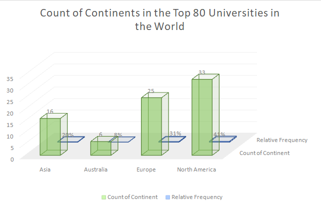
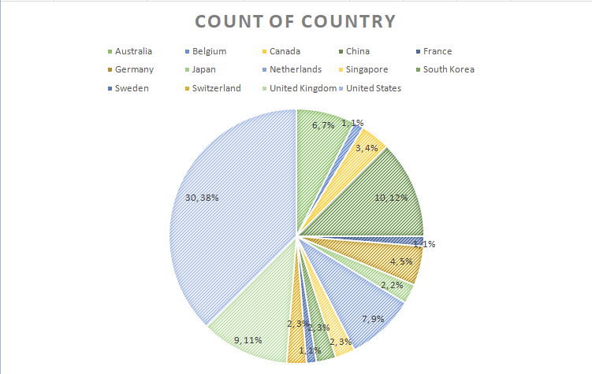

CONTINENT
Out of the seven continents, the Top 80 Universities Ranking only includes four. North America has the highest amount of universities at count 33 and it accounts for 41% of the schools in the rankings. Meanwhile, Australia has the least amount of universities counting only 6 accounting only 8% of the ranking.
COUNTRY
Out of the seven continents, the Top 80 Universities Ranking only includes four. North America has the highest amount of universities at count 33 and it accounts for 41% of the schools in the rankings. Meanwhile, Australia has the least amount of universities counting only 6 accounting only 8% of the ranking.
RESEARCH SCORES
Out of the seven continents, the Top 80 Universities Ranking only includes four. North America has the highest amount of universities at count 33 and it accounts for 41% of the schools in the rankings. Meanwhile, Australia has the least amount of universities counting only 6 accounting only 8% of the ranking.
CITATION SCORES
Out of the seven continents, the Top 80 Universities Ranking only includes four. North America has the highest amount of universities at count 33 and it accounts for 41% of the schools in the rankings. Meanwhile, Australia has the least amount of universities counting only 6 accounting only 8% of the ranking.
INTERNATIONAL OUTLOOK SCORES
Out of the seven continents, the Top 80 Universities Ranking only includes four. North America has the highest amount of universities at count 33 and it accounts for 41% of the schools in the rankings. Meanwhile, Australia has the least amount of universities counting only 6 accounting only 8% of the ranking.
OVERALL SCORES
Out of the seven continents, the Top 80 Universities Ranking only includes four. North America has the highest amount of universities at count 33 and it accounts for 41% of the schools in the rankings. Meanwhile, Australia has the least amount of universities counting only 6 accounting only 8% of the ranking.